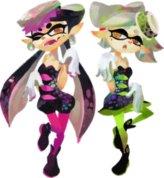
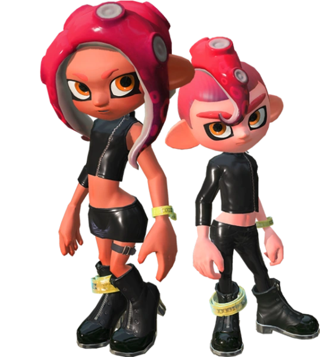
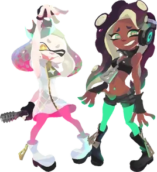

A história de Splatoon começa onde a nossa termina. Há 12.000 anos, a arrogância humana levou à 5ª Guerra Mundial. Em um movimento desesperado, um ataque nuclear massivo foi direcionado ao Polo Sul, causando o derretimento instantâneo das calotas polares. O nível do mar subiu de forma irreversível, engolindo continentes inteiros. Os humanos remanescentes criaram Alterna, um santuário subterrâneo colossal sob o que sobrou do solo. Cientistas foram nomeados líderes, pois acreditava-se que a tecnologia seria a única salvação.
Em Alterna, o avanço tecnológico permitiu a criação de Cristais Líquidos extraídos de fluidos de lulas. Esses cristais possuíam uma propriedade única de "bio-memória": eles projetavam os desejos e sentimentos humanos. Como todos ali desejavam o céu azul, as paredes de Alterna projetavam o firmamento. No entanto, o fim veio por um erro de cálculo. Ao tentarem lançar o foguete de escape, a vibração massiva causou o colapso do domo. Rochas e cristais esmagaram a última cidade humana. A humanidade foi extinta ali, no silêncio do subsolo.
Os cristais caíram no oceano, poluindo as lulas e polvos que nadavam nos restos de Alterna. Eles absorveram a bio-memória humana, acelerando uma evolução de milhões de anos em apenas milênios. O desejo humano de moda, música e competição agora corria no sangue dos novos habitantes: os Inklings.

Milhares de anos após a extinção humana, a terra firme tornou-se o recurso mais valioso do planeta. Inklings e Octolings iniciaram a Great Turf War. Os Octolings, sendo engenheiros naturais, construíram máquinas de guerra colossais chamadas Octoweapons. Eles estavam vencendo a guerra com facilidade, até que o destino interveio de forma ridícula: a bateria principal das máquinas foi desconectada acidentalmente, permitindo que os Inklings contra-atacassem.
O Capitão Cuttlefish e seu Esquadrão Squid conseguiram banir os Octolings para os domos mortos da antiga humanidade. Na superfície, os Inklings fundaram Inkopolis, uma sociedade focada em festivais. O segredo desses festivais, os Splatfests, reside em uma máquina de fax de 12.000 anos chamada Kamisama. Ela capta ondas de rádio do passado humano que viajaram pelo espaço e retornaram agora. Perguntas bobas como "Pão vs. Arroz" são interpretadas como mensagens divinas sagradas, definindo a cultura Inkling moderna.
As Squid Sisters, Callie e Marie, não são apenas estrelas pop. Elas são agentes de elite. Suas vozes carregam a frequência da Calamari Inkantation, uma canção que ressoa no DNA cefalópode e tem o poder de libertar almas de qualquer controle mental ou depressão evolutiva.

No subsolo profundo, o Deepsea Metro esconde o segredo mais sombrio da franquia. O Comandante Tartar é uma inteligência artificial criada pelo "Professor" humano para ser o guardião do conhecimento. Após 12.000 anos de solidão, ele concluiu que os Inklings eram uma falha: seres superficiais obcecados por roupas e jogos, indignos de herdar o mundo humano.
Tartar iniciou o processo de Sanitização. Ele atraía Octolings com a promessa de liberdade e os levava a um liquidificador industrial. Lá, eles eram triturados vivos. Sua essência genética era misturada a uma gosma verde, criando seres sem alma, sem memória e sem vontade própria. O Agente 8 é o espécime número 10.008. Isso significa que mais de dez mil jovens já foram assassinados e transformados em tinta por Tartar antes de você chegar.
Mesmo artistas como Acht (Dead Fish) não escaparam ilesos. Ela se submeteu parcialmente à sanitização apenas para parar de sofrer com as pressões sociais e focar em sua música, perdendo sua cor e sua vida no processo. O plano final de Tartar era disparar o Canhão de Tinta Misturada da Estátua da Liberdade para apagar toda a vida orgânica do planeta e começar do zero.
O vilão de Splatoon 3 é o maior sobrevivente da história: o Mr. Grizz (Urso #03). Ele estava a bordo da espaçonave Ark Polaris, que carregava as últimas formas de vida mamífera. A nave colidiu no espaço e ficou à deriva por milênios. Ao retornar à Terra e ver o planeta dominado por lulas, Grizz foi consumido pelo luto. Ele é o único mamífero terrestre puro restante e não aceita que sua era acabou.
Através da Grizzco, ele obrigou Inklings a coletarem Golden Eggs para alimentar seu plano: a criação da Fuzzy Ooze. Essa geleia peluda reverte a evolução dos seres marinhos, transformando-os em mamíferos aberrantes. Ele pretendia cobrir o planeta com essa substância, extinguindo as lulas e trazendo de volta o reino dos pelos. A batalha final no espaço representa o choque entre o passado que se recusa a morrer e o presente que luta para brilhar.

A trilogia culmina na Spire of Order. Marina, da Off the Hook, criou o Memverse, um mundo virtual para restaurar as memórias dos Octolings sanitizados. No entanto, a entidade Order (Smollusk) tomou o controle. Para a Ordem, o mundo perfeito é aquele onde nada muda. Um mundo cinza, estático, sem conflitos, mas também sem vida, sem arte e sem alma.
Nesta simulação, o Agente 8 precisa lutar contra a estagnação absoluta. A lore revela que o desejo da Marina de proteger a todos quase criou uma prisão eterna. Ao final, aprendemos que o Caos não é destruição, mas a mudança constante que permite a existência da música, da moda e da evolução. O mundo de Splatoon é vibrante justamente porque é imperfeito e perigoso.